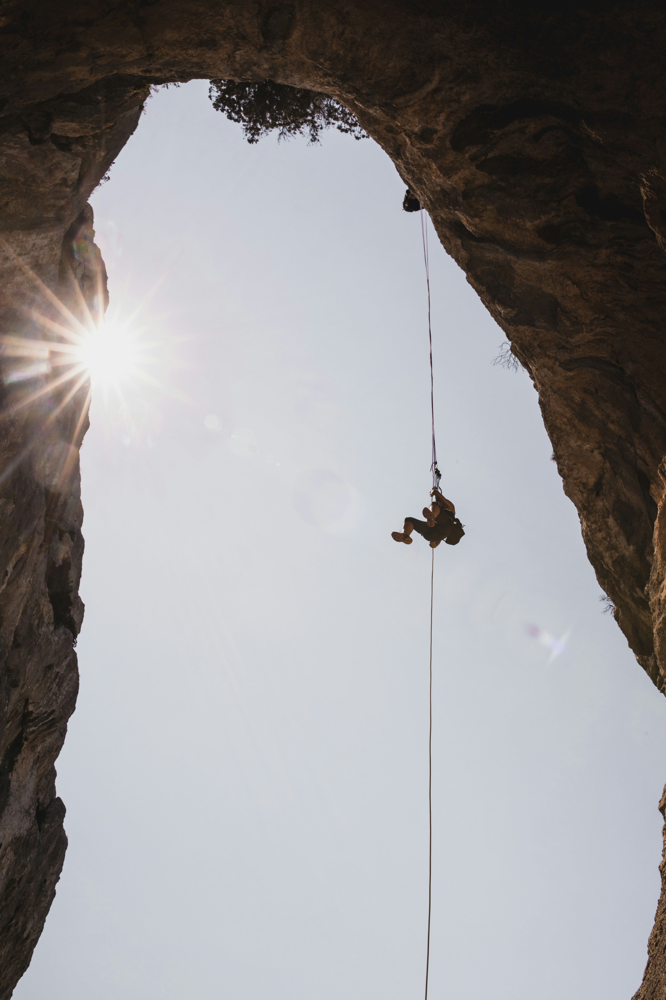
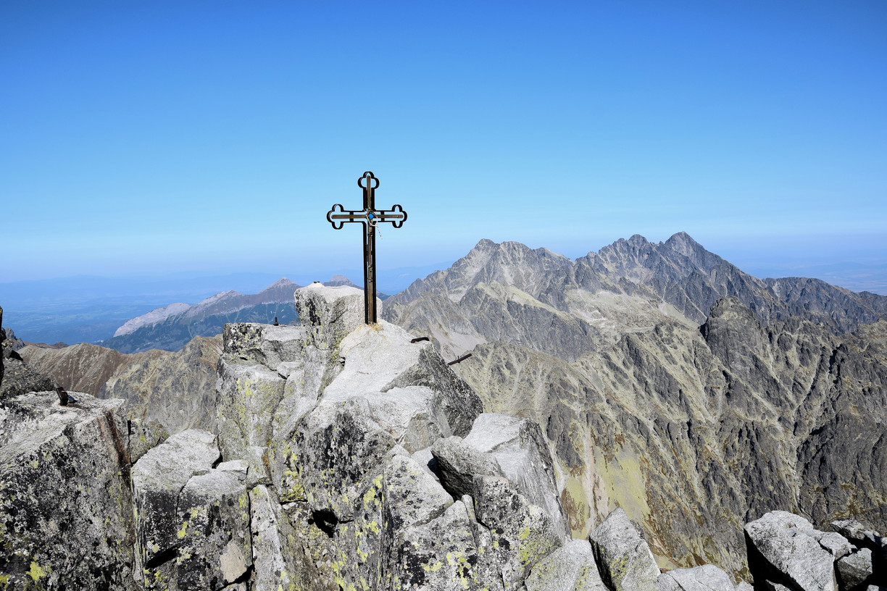

Horolezectvo vo Vysokých Tatrách je fascinujúce a zároveň náročné. Tatra Mountains ponúka rôznorodé terény a horské vrcholy, ktoré sú obľúbené medzi horolezcami z celého sveta. Niektoré z najznámejších miest pre horolezectvo vo Vysokých Tatrách
Vysoké Tatry ponúkajú rozmanitý terén, čo z nich robí fascinujúce prostredie pre rôzne aktivity vrátane turistiky, horolezectva a lyžovania. Tu je niekoľko aspektov ich rozmanitého terénu
Vrcholy a horské štíty: Tatry sú domovom mnohých vrcholov, ktoré sa pýšia strmými stenami a exponovanými vrcholmi. Tieto štíty ponúkajú výzvu pre horolezcov a tiež úžasný výhľad na okolitú krajinu.
Zjazdovky a svahy: V zimnom období sa Tatry menia na zimný raj s množstvom zjazdoviek a svahov pre lyžiarov a snowboardistov. Terén sa pohybuje od mierneho až po extrémne náročný, čo zabezpečuje zábavu pre všetky úrovne lyžiarov.
Jedným z najznámejších miest v Tatrách pre horolezcov je Gerlachovský štít. S výškou 2 655 metrov je najvyšším vrcholom na Slovensku a atraktívnym cieľom pre horolezcov z celého sveta. Lezenie na Gerlachovský štít je náročné a vyžaduje si značné horolezecké skúsenosti a zručnosti. .
Pri horolezectve je dôležité mať správnu výbavu, ktorá zabezpečí bezpečnosť a pohodlie počas výstupu. Tu je základný zoznam vecí, ktoré by ste mali zvážiť
Používa sa na upevnenie k horolezeckým lanám a na pripojenie horolezeckých prístrojov.
Kvalitné lano je nevyhnutnosťou pre horolezectvo. Zvyčajne sa používajú dynamické lany, ktoré absorbujú nárazy pri páde.
ZHlavnou funkciou horolezeckej prilby je ochrana hlavy pred možnými úrazmi pri pádoch, náraze kamienkov alebo iných nebezpečných udalostí.